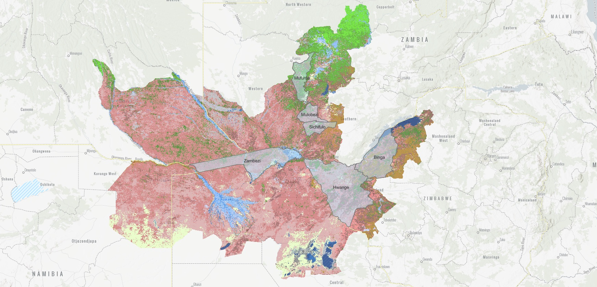

02.1
Land cover & land use mapping
Classification of land cover and land use from satellite imagery, at landscape, national or transboundary scale.
Pillar 02 · Spatial analysis
We map habitats and land cover, track change over time and build monitoring systems that show whether a programme is working.

Background
Every activity happens somewhere. Whether you manage a global supply chain, source from farms or run a conservation programme, understanding the places where your work unfolds is key to its success. At every scale, from global supply chains and whole landscapes to river basins and individual farm plots, remote sensing, GIS and AI can sharpen your insight and make your operations and programmes more effective and efficient.
We apply state-of-the-art spatial technology to solve geospatial challenges anywhere in the world. Our experience covers habitat and biodiversity monitoring, deforestation analysis, carbon stock assessment, programme impact monitoring, and risk assessment for businesses and their supply chains.
Get in touch for an initial conversation about how our team can help your organization make the most of the wide range of spatial tools available.
What we offer
Classification of land cover and land use from satellite imagery, at landscape, national or transboundary scale.
Time-series analysis to detect where habitats are degrading, recovering or being converted.
Indicator frameworks and monitoring systems to measure biodiversity and ecosystem health over time.
Design of sampling and field campaigns, and integration of field data with remote sensing models.
Monitoring of ecosystem services over time with automated remote sensing pipelines, showing how the benefits nature provides are changing.
Clear visual products for programme teams, donors and the public.
Experience
Our team has delivered spatial analysis for international conservation programmes, research institutions and carbon project developers. That includes:
Related work
Tell us briefly about your project. We usually reply within one working day.